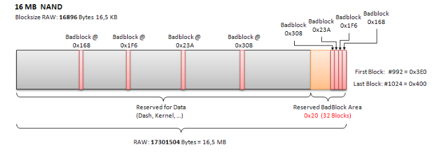
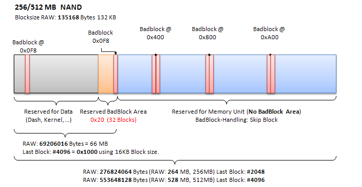

Bad Blocks
What is a BLOCK?
A block is the smallest logically addressable unit of data that a specified device can transfer in an input/output operation. For XBOX 360s that is either 16KB or 128KB.
What is a BAD BLOCK?
Bad Blocks are blocks that contain one or more invalid bits whose reliability is not guaranteed. Bad Blocks may be present when the device is shipped, or may develop during the lifetime of the device.
How to determine BAD BLOCKS?
In one block there are n Pages, all have a fixed size of 528 Bytes (nomatter if the Block is 16K or 128K). Every Page has 16 Byte big ECC data at its end. The block itself does not have ECC data, only the pages have! In theory the whole block gets filled with zeros if its bad, practicly it's not like that. So, if the first 12 Bytes of the page's ECC data is nulled, the page is marked bad, so the whole block is aswell. The remaining 4 Bytes of the ECC is the CRC Data. If the first 12 Bytes of ECC is 0xFF the page has no data (empty, but NOT faulty) and if it hold anything else than 0x00 or 0xFF then the page is filled with data.
What happens when a BAD BLOCK develops?
There are two methods to replace the block.
-
- Skip Block Method
-
- Reserve Block Method
How does the Reserve Block Method work?
Blocks are not skipped but rather they are re-directed to a Reserved Block Area used specifically for Bad Block replacement. The Reserved Block Area also stores/saves the Bad Block Table that keeps track of the re-mapped “developed Bad Blocks”. Which method does the XBOX employ?
Short answer both. In 16MB nands the XBOX exclusively uses the Reserve Block Method, while in 256MB or 512MB nands it uses both. The MU area of the nand uses the Skip Block Method, while the area where the dash and kernel are stored uses the Reserve Block Method.
XBOX 16MB NAND BLOCK Management

If you noticed in the memory table above any Badblocks encountered are consecutively moved to the Reserved BadBlock Area. The first Bad Block(0x168) is moved to Block 0x3FF in the reserved area, the next(0x1F6) is moved to 0X3FE, and it continues until all Bad Blocks have been remapped.
When I read my nand I have Badblocks where is that data stored?
When reading your nand any Badblocks would have already been remapped to the reserve area. This is important to keep in mind, specifically when you encounter Badblocks where crucial data is kept such as blocks 0x001(Key Vault), 0x3DE(First Config Block), and 0x3DF(Second Config Block).
How would I remap the BadBlocks in the diagram with nandpro?
Assuming your attempting to flash the latest release of XBReboot named as ‘xbr.bin’. And have made a full-backup and have already injected your Key Vault and Configuration Blocks into ‘xbr.bin’. The commands would be as follow:
nandpro xbr.bin: -r16 badblock168.bin 168 1
nandpro xbr.bin: -w16 badblock168.bin 3FF 1
nandpro xbr.bin: -r16 badblock1F6.bin 1F6 1
nandpro xbr.bin: -w16 badblock1F6.bin 3FE 1
nandpro xbr.bin: -r16 badblock23A.bin 23A 1
nandpro xbr.bin: -w16 badblock23A.bin 3FD 1
nandpro xbr.bin: -r16 badblock308.bin 308 1
nandpro xbr.bin: -w16 badblock308.bin 3FC 1
If using XeLLous to flash do I need to remap Badblocks?
According to the XeLLous release notes no, it is suppose to be one of the main features of the update. That is not to say bugs might not be encountered. If you encounter suspicious issues, and believe it might be related to a bad flash, then I recommend flashing manually with nandpro or using trancy’s XBR-Flash for Linux.
I have a Badblock between blocks 0x000 and 0x050, and can’t boot into Xell (free60 version).
First of all ensure your using the free60 version of Xell. Next you will need to backup the location of the remapped BadBlocks like so (Remeber your first Badblock always goes to 3FF, and each following Badblock gets remapped as illustrated in the diagram):
nandpro lpt: -r16 backup3FF.bin 3FF 1
Assuming your first Badblock was at 0x010, you will need to remap the free60 Xell data that was intended to be stored in that block. Like this.
nandpro xell.bin: -r16 xell10.bin 10 1
nandpro lpt: -w16 xell10.bin 3FF 1
Lastly the bad block needs to erased to prevent any corruption:
nandpro lpt: -e16 10 1
(EDIT: The bad block may not need to be erased. If the CRC in the ECC data doesn't match that of the page, the SMC will deem it a bad block anyway and then look to the spare area for a relocated block.)
I have a Badblock between blocks 0x000 and 0x050, and can’t boot into Xell (RGH / Team-Xecuter DGX version).
XeLL for RGH/DGX is written with +w16 ('+' to signify the recreation of ECC data) so you cannot simply -r16 from image_00000000.ecc (or DGX.ecc) as it's not seen by NANDPro as a valid VNAND.
Therefore, the following steps must be carried out:
Assuming your first Badblock was at 0x010,
- Make a copy of your original NAND
copy nanddump.bin tempnand.bin
- Write the ECC to your NAND as per normal:
nandpro [LPT|USB]: +w16 image_00000000.ecc.
At this point you should confirm that you get an 'error xxx writing to xxx' message. This is perfectly normal.
- Write the ECC to tempnand.bin using NANDPro:
nandpro tempnand.bin: +w16 image_00000000.ecc
- Read block 0x010 from your newly written-to VNAND:
nandpro tempnand.bin: -r16 010.bin 10 1
5. Write the block to the same place in the spare area as the original relocated bad block. If this is the first bad block, it should be 0x3FF but check using 360 Flash Dump Tool, xNANDHealer, J-Runner etc to ensure this is the case.
nandpro [LPT|USB]: -w16 010.bin 3FF
Lastly the bad block needs to erased to prevent any corruption:
nandpro lpt: -e16 10 1
(EDIT: The bad block may not need to be erased. If the CRC in the ECC data doesn't match that of the page, the SMC will deem it a bad block anyway and then look to the spare area for a relocated block.)
--Xb0xGuru 15:19, 24 February 2013 (UTC)
XBOX 256/512MB NAND BLOCK Management

Understanding 256/512 MB memory map, and Nandpro’s translation:
The block size in 256/512 Nands is 132 KB (135168 Bytes). This is a little different then how Nandpro references and addresses blocks. No matter the Block size of your nand nandpro uses a block size of 16 KB that means that for every Badblock in the 256/512 MB nandpro will report 8 consecutive errors.
If you noticed in the memory table above any Badblocks encountered are consecutively moved to the Reserved BadBlock Area. The first Badblock (0x0F8) is moved to Block 0xFF8 (16 KB) or Block 0x1FF (132 KB) in the reserved area, any consecutive Badblocks would of been moved to blocks 0xFF0 (16 KB) or Block 0x1FE (132 KB) and so forth.
When I read my nand I have Badblocks where is that data stored?
When reading your nand any Badblocks would have already been remapped to the reserve area. This is important to keep in mind, specifically when you encounter Badblocks where crucial data is kept such as blocks 0x001(Key Vault), 0xEF7(Config Block),.
How would I remap the BadBlocks in the diagram with nandpro?
Assuming your attempting to flash the latest release of XBReboot named as ‘xbr.bin’. And have made a full-backup and have already injected your Key Vault and Configuration Blocks into ‘xbr.bin’. The commands would be as follow:
nandpro xbr.bin: -r16 badblockF8.bin F8 8
nandpro xbr.bin: -w16 badblockF8.bin FF8 8
Is 8 correct? Yes remember nandpro reference blocks in sizes of 16 KB, but 256/512 MB have a block size of 132 KB. 132/16 is equal to 8, that why you need to use 8.
If using XeLLous to flash do I need to remap Badblocks?
According to the XeLLous release notes no, it is suppose to be one of the main features of the update. That is not to say bugs might not be encountered. If you encounter suspicious issues, and believe it might be related to a bad flash, then I recommend flashing manually with nandpro or using trancy’s XBR-Flash for Linux.
I have a Badblock between blocks 0x000 and 0x050, and can’t boot into Xell (free60 version).
First of all ensure your using the free60 version of Xell. Next you will need to backup the location of the remapped BadBlocks like so (Remeber your first Badblock always goes to 0xFF8, and each following Badblock gets remapped to the spare):
nandpro lpt: -r256 backupFF8.bin FF8 8
Assuming your first Badblock was at 0x010 followed by seven more errors, you will need to remap the free60 Xell data that was intended to be stored in that block. Like this.
nandpro xell.bin: -r16 xell10.bin 10 8
nandpro lpt: -w16 xell10.bin FF8 8
Lastly the bad block needs to erased to prevent any corruption:
nandpro lpt: -e16 10 1
(EDIT: The bad block may not need to be erased. If the CRC in the ECC data doesn't match that of the page, the SMC will deem it a bad block anyway and then look to the spare area for a relocated block.)
I have a Badblock between blocks 0x000 and 0x050, and can’t boot into Xell (RGH / Team-Xecuter DGX version).
XeLL for RGH/DGX is written with +w16 ('+' to signify the recreation of ECC data) so you cannot simply -r16 from image_00000000.ecc (or DGX.ecc) as it's not seen by NANDPro as a valid VNAND.
Therefore, the following steps must be carried out:
Assuming your first Badblock was at 0x010,
1. Make a copy of your original NAND
copy nanddump.bin tempnand.bin
2. Write the ECC to your NAND as per normal:
nandpro [LPT|USB]: +w16 image_00000000.ecc
At this point you should confirm that you get an 'error xxx writing to xxx' message. This is perfectly normal.
3. Write the ECC to tempnand.bin using NANDPro:
nandpro tempnand.bin: +w16 image_00000000.ecc
4. Read block 0x010 from your newly written-to VNAND:
nandpro tempnand.bin: -r16 010.bin 10 8
5. Write the block to the same place in the spare area as the original relocated bad block. If this is the first bad block, it should be 0x3FF but check using 360 Flash Dump Tool, xNANDHealer, J-Runner etc to ensure this is the case.
nandpro [LPT|USB]: -w16 010.bin FF8
Lastly the bad block needs to erased to prevent any corruption:
nandpro lpt: -e16 10 8
(EDIT: The bad block may not need to be erased. If the CRC in the ECC data doesn't match that of the page, the SMC will deem it a bad block anyway and then look to the spare area for a relocated block.)
--Xb0xGuru 15:19, 24 February 2013 (UTC)
Source: google-docs (archive.org mirror) & XBH, posted by trancy